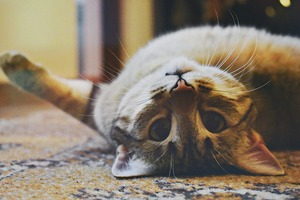
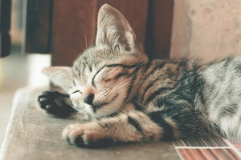

Cat kitty cat Cat cat c a t :)
The cat (Felis catus), also referred to as domestic cat or house cat, is a small domesticated carnivorous mammal. It is the only domesticated species of the family Felidae. Advances in archaeology and genetics have shown that the domestication of the cat occurred in the Near East around 7500 BC. It is commonly kept as a house pet and farm cat, but also ranges freely as a feral cat avoiding human contact. Valued by humans for companionship and its ability to kill vermin, the cat's retractable claws are adapted to killing small prey like mice and rats. It has a strong, flexible body, quick reflexes, and sharp teeth, and its night vision and sense of smell are well developed.
As of 2017, the domestic cat was the second most popular pet in the United States, with 95.6 million cats owned and around 42 million households owning at least one cat. In the United Kingdom, 26% of adults have a cat, with an estimated population of 10.9 million pet cats as of 2020. As of 2021, there were an estimated 220 million owned and 480 million stray cats in the world.
